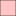
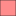

<!doctype html>
<html lang="en">
    <head>
        <meta charset="utf-8">
        <meta http-equiv="X-UA-Compatible" content="IE=edge">
        <meta name="viewport" content="initial-scale=1,user-scalable=no,maximum-scale=1,width=device-width">
        <meta name="mobile-web-app-capable" content="yes">
        <meta name="apple-mobile-web-app-capable" content="yes">
        <link rel="stylesheet" href="css/leaflet.css">
        <link rel="stylesheet" href="css/qgis2web.css"><link rel="stylesheet" href="css/fontawesome-all.min.css">
        <link rel="stylesheet" href="css/leaflet-measure.css">
        <style>
        html, body, #map {
            width: 100%;
            height: 100%;
            padding: 0;
            margin: 0;
        }
        </style>
        <title></title>
    </head>
    <body>
        <div id="map">
        </div>
        <script src="js/qgis2web_expressions.js"></script>
        <script src="js/leaflet.js"></script>
        <script src="js/leaflet.rotatedMarker.js"></script>
        <script src="js/leaflet.pattern.js"></script>
        <script src="js/leaflet-hash.js"></script>
        <script src="js/Autolinker.min.js"></script>
        <script src="js/rbush.min.js"></script>
        <script src="js/labelgun.min.js"></script>
        <script src="js/labels.js"></script>
        <script src="js/leaflet-measure.js"></script>
        <script src="data/wardsmap_1.js"></script>
        <script>
        var highlightLayer;
        function highlightFeature(e) {
            highlightLayer = e.target;
            highlightLayer.openPopup();
        }
        var map = L.map('map', {
            zoomControl:true, maxZoom:28, minZoom:1
        })
        var hash = new L.Hash(map);
        map.attributionControl.setPrefix('<a href="https://github.com/tomchadwin/qgis2web" target="_blank">qgis2web</a> &middot; <a href="https://leafletjs.com" title="A JS library for interactive maps">Leaflet</a> &middot; <a href="https://qgis.org">QGIS</a>');
        var autolinker = new Autolinker({truncate: {length: 30, location: 'smart'}});
        var measureControl = new L.Control.Measure({
            position: 'topleft',
            primaryLengthUnit: 'meters',
            secondaryLengthUnit: 'kilometers',
            primaryAreaUnit: 'sqmeters',
            secondaryAreaUnit: 'hectares'
        });
        measureControl.addTo(map);
        document.getElementsByClassName('leaflet-control-measure-toggle')[0]
        .innerHTML = '';
        document.getElementsByClassName('leaflet-control-measure-toggle')[0]
        .className += ' fas fa-ruler';
        var bounds_group = new L.featureGroup([]);
        function setBounds() {
            if (bounds_group.getLayers().length) {
                map.fitBounds(bounds_group.getBounds());
            }
            map.setMaxBounds(map.getBounds());
        }
        map.createPane('pane_OpenStreetMap_0');
        map.getPane('pane_OpenStreetMap_0').style.zIndex = 400;
        var layer_OpenStreetMap_0 = L.tileLayer('https://tile.openstreetmap.org/{z}/{x}/{y}.png', {
            pane: 'pane_OpenStreetMap_0',
            opacity: 1.0,
            attribution: '',
            minZoom: 1,
            maxZoom: 28,
            minNativeZoom: 0,
            maxNativeZoom: 19
        });
        layer_OpenStreetMap_0;
        map.addLayer(layer_OpenStreetMap_0);
        function pop_wardsmap_1(feature, layer) {
            layer.on({
                mouseout: function(e) {
                    if (typeof layer.closePopup == 'function') {
                        layer.closePopup();
                    } else {
                        layer.eachLayer(function(feature){
                            feature.closePopup()
                        });
                    }
                },
                mouseover: highlightFeature,
            });
            var popupContent = '<table>\

                    <tr>\
                        <td colspan="2">' + (feature.properties['ward_name'] !== null ? autolinker.link(feature.properties['ward_name'].toLocaleString()) : '') + '</td>\
                    </tr>\

                    <tr>\
                        <td colspan="2">' + (feature.properties['avghospitaldist'] !== null ? autolinker.link(feature.properties['avghospitaldist'].toLocaleString()) : '') + '</td>\
                    </tr>\


                </table>';
            layer.bindPopup(popupContent, {maxHeight: 400});
        }

        function style_wardsmap_1_0(feature) {
            if (feature.properties['avghospitaldist'] >= 208.428512 && feature.properties['avghospitaldist'] <= 479.118980 ) {
                return {
                pane: 'pane_wardsmap_1',
                opacity: 1,
                color: 'rgba(35,35,35,1.0)',
                dashArray: '',
                lineCap: 'butt',
                lineJoin: 'miter',
                weight: 1.0,
                fill: true,
                fillOpacity: 1,
                fillColor: 'rgba(255,255,255,1.0)',
                interactive: true,
            }
            }
            if (feature.properties['avghospitaldist'] >= 479.118980 && feature.properties['avghospitaldist'] <= 836.909914 ) {
                return {
                pane: 'pane_wardsmap_1',
                opacity: 1,
                color: 'rgba(35,35,35,1.0)',
                dashArray: '',
                lineCap: 'butt',
                lineJoin: 'miter',
                weight: 1.0,
                fill: true,
                fillOpacity: 1,
                fillColor: 'rgba(255,191,191,1.0)',
                interactive: true,
            }
            }
            if (feature.properties['avghospitaldist'] >= 836.909914 && feature.properties['avghospitaldist'] <= 1814.599478 ) {
                return {
                pane: 'pane_wardsmap_1',
                opacity: 1,
                color: 'rgba(35,35,35,1.0)',
                dashArray: '',
                lineCap: 'butt',
                lineJoin: 'miter',
                weight: 1.0,
                fill: true,
                fillOpacity: 1,
                fillColor: 'rgba(255,128,128,1.0)',
                interactive: true,
            }
            }
            if (feature.properties['avghospitaldist'] >= 1814.599478 && feature.properties['avghospitaldist'] <= 4954.028985 ) {
                return {
                pane: 'pane_wardsmap_1',
                opacity: 1,
                color: 'rgba(35,35,35,1.0)',
                dashArray: '',
                lineCap: 'butt',
                lineJoin: 'miter',
                weight: 1.0,
                fill: true,
                fillOpacity: 1,
                fillColor: 'rgba(255,64,64,1.0)',
                interactive: true,
            }
            }
            if (feature.properties['avghospitaldist'] >= 4954.028985 && feature.properties['avghospitaldist'] <= 25833.614600 ) {
                return {
                pane: 'pane_wardsmap_1',
                opacity: 1,
                color: 'rgba(35,35,35,1.0)',
                dashArray: '',
                lineCap: 'butt',
                lineJoin: 'miter',
                weight: 1.0,
                fill: true,
                fillOpacity: 1,
                fillColor: 'rgba(255,0,0,1.0)',
                interactive: true,
            }
            }
        }
        map.createPane('pane_wardsmap_1');
        map.getPane('pane_wardsmap_1').style.zIndex = 401;
        map.getPane('pane_wardsmap_1').style['mix-blend-mode'] = 'normal';
        var layer_wardsmap_1 = new L.geoJson(json_wardsmap_1, {
            attribution: '',
            interactive: true,
            dataVar: 'json_wardsmap_1',
            layerName: 'layer_wardsmap_1',
            pane: 'pane_wardsmap_1',
            onEachFeature: pop_wardsmap_1,
            style: style_wardsmap_1_0,
        });
        bounds_group.addLayer(layer_wardsmap_1);
        map.addLayer(layer_wardsmap_1);
        var baseMaps = {};
        L.control.layers(baseMaps,{'wardsmap<br /><table><tr><td style="text-align: center;"></td><td>208 - 479 </td></tr><tr><td style="text-align: center;"></td><td>479 - 837 </td></tr><tr><td style="text-align: center;"></td><td>837 - 1815 </td></tr><tr><td style="text-align: center;"></td><td>1815 - 4954 </td></tr><tr><td style="text-align: center;"></td><td>4954 - 25834 </td></tr></table>': layer_wardsmap_1,"OpenStreetMap": layer_OpenStreetMap_0,}).addTo(map);
        setBounds();
        var i = 0;
        layer_wardsmap_1.eachLayer(function(layer) {
            var context = {
                feature: layer.feature,
                variables: {}
            };
            layer.bindTooltip((layer.feature.properties['ward_name'] !== null?String('<div style="color: #000000; font-size: 10pt; font-family: \'.AppleSystemUIFont\', sans-serif;">' + layer.feature.properties['ward_name']) + '</div>':''), {permanent: true, offset: [-0, -16], className: 'css_wardsmap_1'});
            labels.push(layer);
            totalMarkers += 1;
              layer.added = true;
              addLabel(layer, i);
              i++;
        });
        resetLabels([layer_wardsmap_1]);
        map.on("zoomend", function(){
            resetLabels([layer_wardsmap_1]);
        });
        map.on("layeradd", function(){
            resetLabels([layer_wardsmap_1]);
        });
        map.on("layerremove", function(){
            resetLabels([layer_wardsmap_1]);
        });
        </script>
    </body>
</html>
